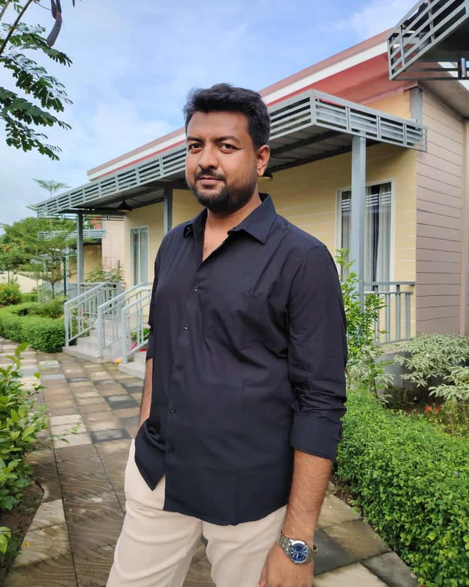
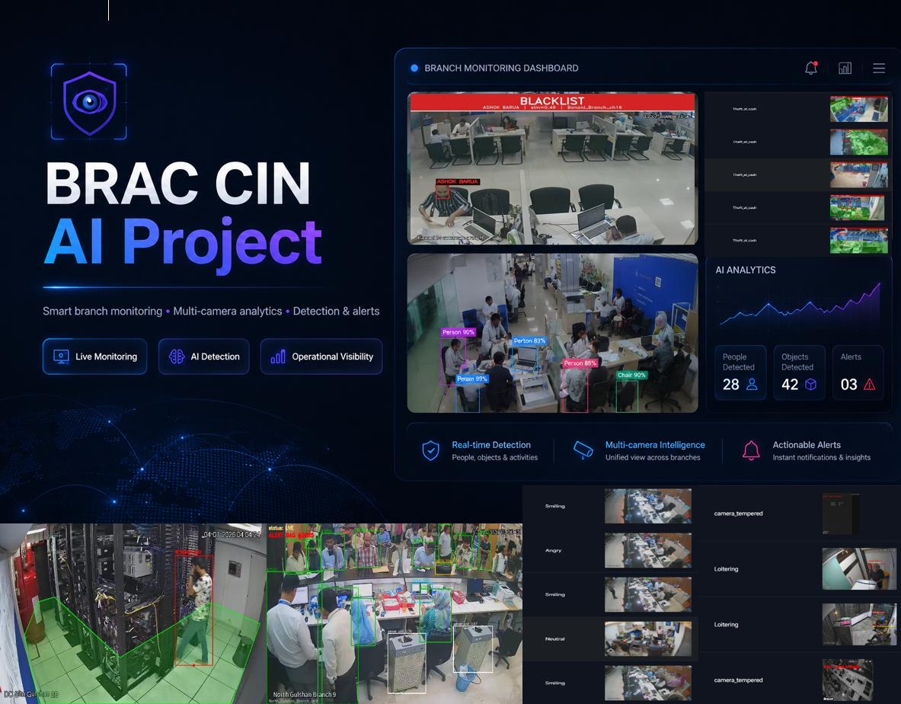
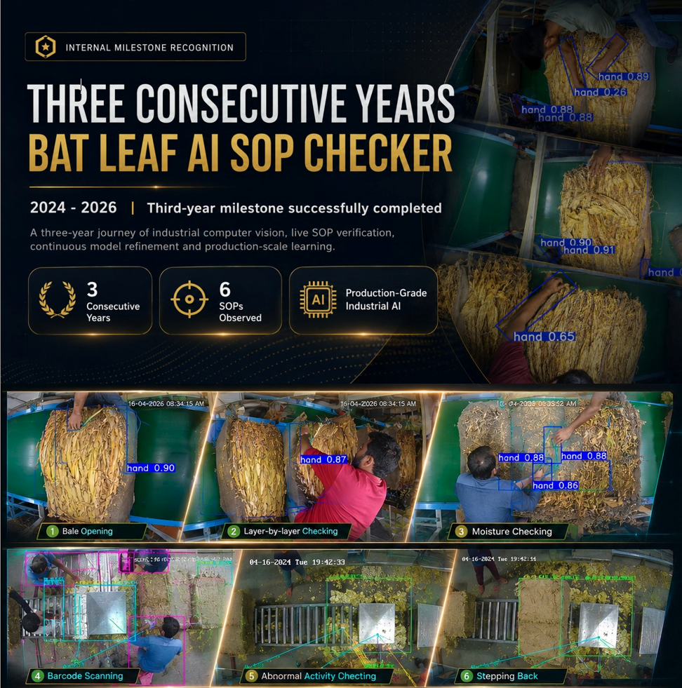
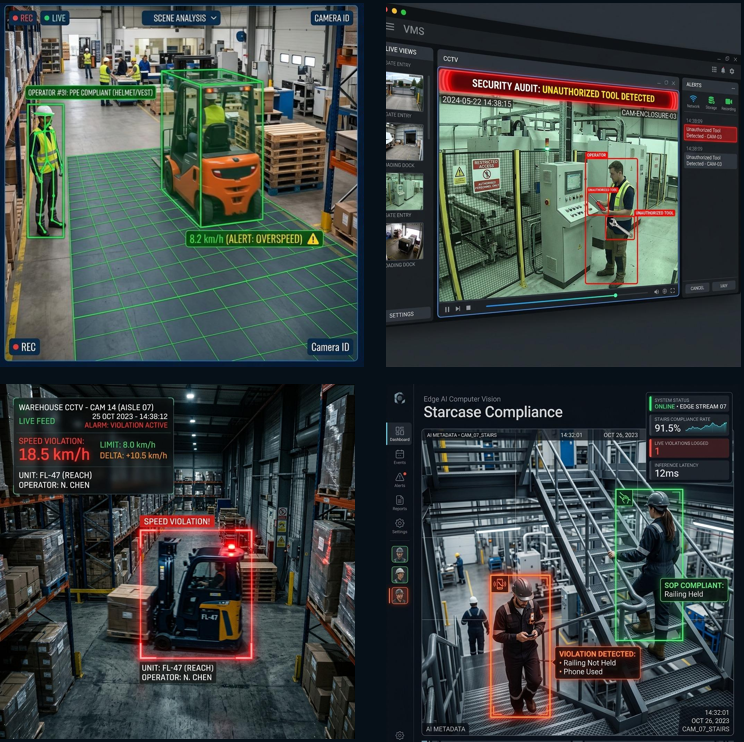
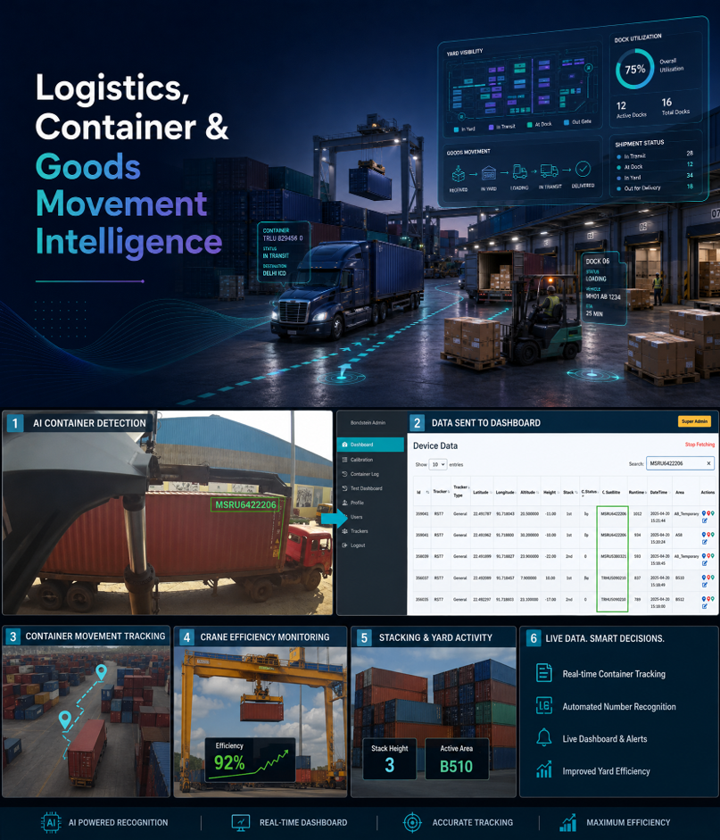
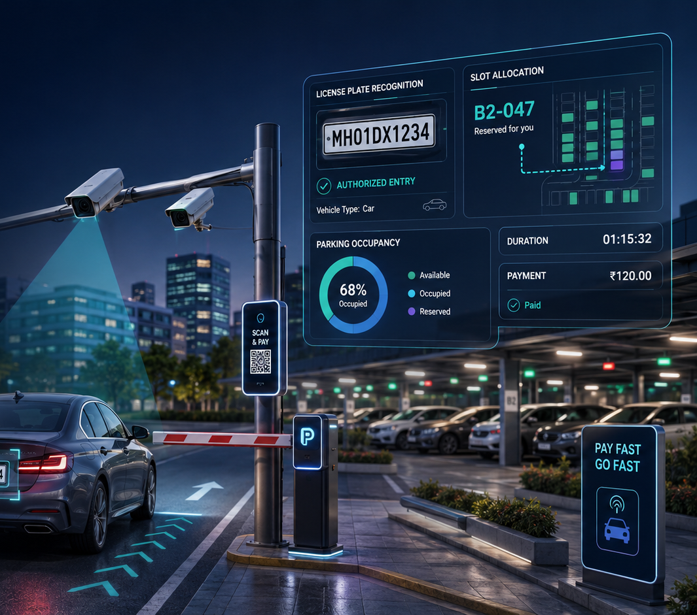
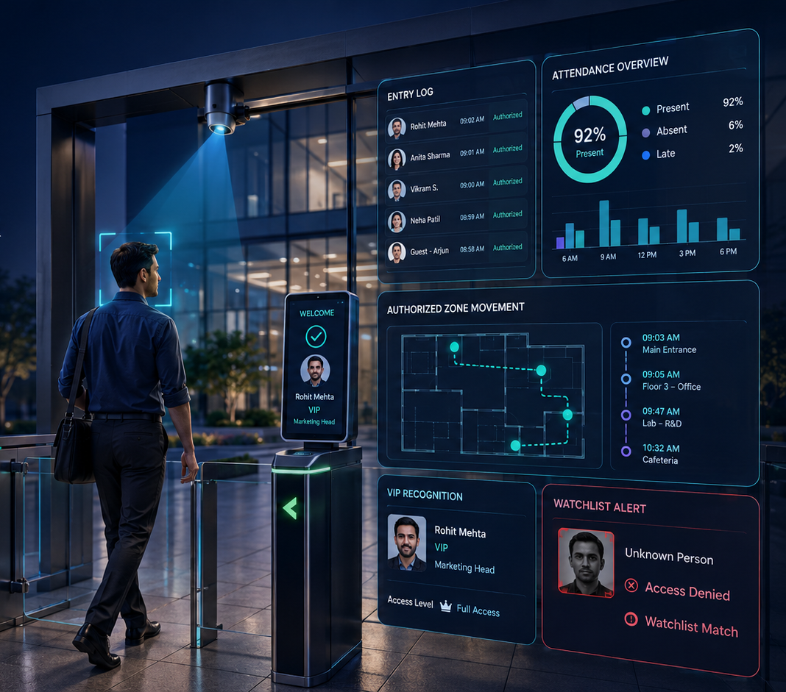
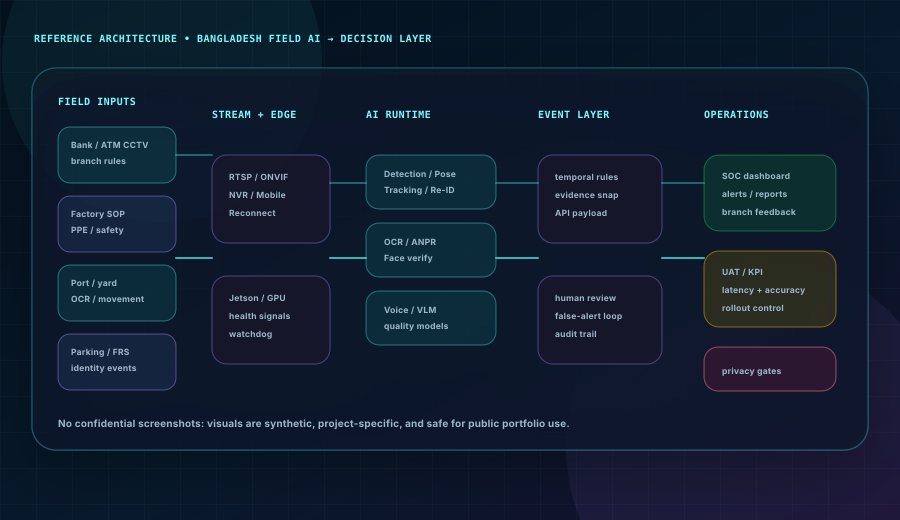

AI Product Leadership
Product vision, discovery, feasibility, MVP scope, roadmap, backlog, acceptance criteria, stakeholder alignment, risk, and business/technical KPIs.
Md. Ashfaqul Haque — AI Product Lead & Senior ML Engineer
I translate complex operational problems into production-grade computer vision and edge AI platforms—owning discovery, architecture, model delivery, UAT, deployment, and continuous improvement across regulated and high-complexity environments.

The strongest differentiator is not a single model. It is the ability to connect business need, camera reality, data quality, model behavior, infrastructure, UAT, and adoption into one accountable delivery system.
Product vision, discovery, feasibility, MVP scope, roadmap, backlog, acceptance criteria, stakeholder alignment, risk, and business/technical KPIs.
Detection, tracking, pose, OCR/ANPR, face recognition, segmentation, re-identification, temporal logic, evidence capture, and behavior analytics.
RTSP/NVR ingestion, Jetson deployment, central GPU servers, APIs, state persistence, watchdogs, retry/reconnect logic, observability, and secure hybrid architecture.
Experiment design, metric learning, explainability, federated methods, model evaluation, technical writing, and the conversion of research ideas into operational products.
Each stage has a concrete output, decision gate, and measurable acceptance condition.
A focused view of the highest-signal programs. The complete portfolio—including older projects, prototypes, products, and research initiatives—is preserved in the work archive.

Security, behavior, face, alert, evidence, and dashboard workflows across a large centralized estate.

Three consecutive operating cycles of on-premises, multi-step computer vision and evidence traceability.

Virtual fencing, PPE, harness, behavior, vehicle, pathway, and evidence-driven alerting.

OCR, tracking, edge compute, and operational integration for high-volume depot movement.

Bangla plate recognition, driver association, gate events, calibration, and real-site support.

Identity matching, whitelist/blacklist alerts, attendance, VIP workflows, and movement evidence.
A model is only one component. Production reliability comes from resilient ingestion, state, configuration, evidence, APIs, observability, rollback, and human review.

Research spans computer vision, medical prediction, federated learning, intent classification, explainability, and numerical energy-material studies—complemented by an M.Sc. thesis in hybrid face verification.
M.Sc. research · metric learning · verification thresholds · ablation and operational evaluation
Privacy-aware collaborative learning · IEEE R10 HTC
Medical prediction · comparative machine learning · ICECCME
Interdisciplinary numerical research · Zeitschrift für Naturforschung A
Reach me directly—no signup, no portal, no unnecessary contact backend.